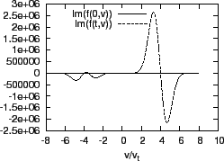

In Sec. 3, the equilibrium velocity distribution of electrons is
chosen to be Maxwellian, where we see that perturbations are damped, which is
the well-known Landau damping. In this section, we investigate a case where
perturbation grows, instead of being damped. Consider an equilibrium
distribution function consisting of two counter-propagating Maxwellian beams
of mean speed and thermal spread  , i.e.,
, i.e.,
Then
is written
Using the same code discussed in Sec. 3, I solve Equation
(75) with
given by Eq.
(92) and the initial perturbation given by Eq. (78).
Figure 10 plots the equilibrium distribution function with
.
Figure 10:
Equilibrium distribution function given by Eq.
(91) with
.
|
Figure 11 plots the time evolution of the perturbed electric
field, which shows the the electric field grows exponentially in time and thus
corresponds to an instability. This instability is called two-stream
instability since it happens in the system with two opposite electron beams.
Figure:
Comparison of the simulation results with analytical
growth rate given by Eq. (93). The parameters are
and
.
|
In Fig. 11, the simulation results are also compared with the
analytical results in the cold beam approximation (
), which
is given by equation (8.1.35) in Gurnett's book[1], i.e.,
To make the simulation result able to be compared with the results in the cold
beam approximation, the thermal velocity of the beam has been chosen to be a
small number
. The results in Fig. 11
shows that the simulation results agree with the analytical results. The small
discrepancy can be attributed to that equation (93) was derived
by assuming the electron distribution function is a Dirac  function
while in the simulation, the distribution function is a Maxwellian
distribution with small a thermal spread
. Also
note that in this case, the approximate phase velocity of the electron plasma
wave is
and the beam velocity
.
Thus, the distribution function is very small at the phase velocity. Therefore
the Landau damping in this case is neglectably small. In fact, equation (93) was derived by neglecting the Landau damping.
function
while in the simulation, the distribution function is a Maxwellian
distribution with small a thermal spread
. Also
note that in this case, the approximate phase velocity of the electron plasma
wave is
and the beam velocity
.
Thus, the distribution function is very small at the phase velocity. Therefore
the Landau damping in this case is neglectably small. In fact, equation (93) was derived by neglecting the Landau damping.
Figure:
Real part (a) and imaginary part (b) of the perturbed distribution
function  at
. The parameters are
and
.
at
. The parameters are
and
.
|  |
yj
2016-01-26